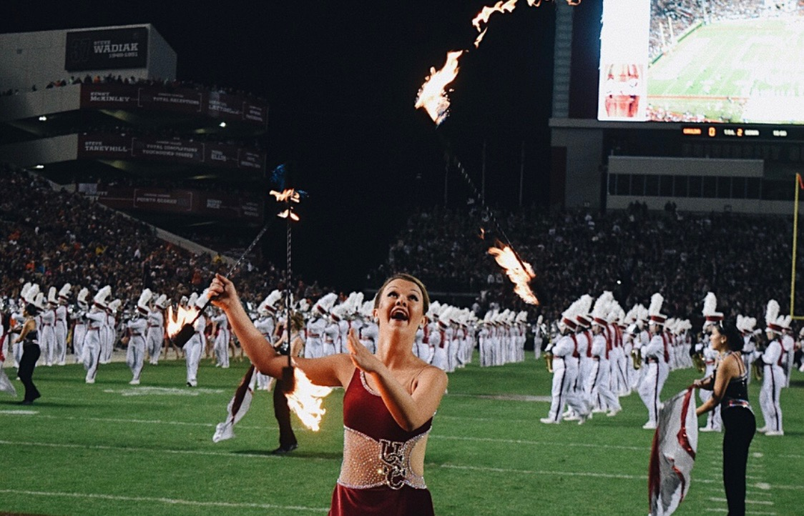

The History of Baton Twirling
Baton twirling is a sport involving the manipulation of a metal rod with the hands and body to a co-coordinated routine. Competitive Baton Twirling encompasses the manipulation of a metal rod (baton) and the performer's body to a coordinated program of skills set to music. . It is considered a sport and contains many disciplines such as: 1 Baton Twirling, 2-Baton Twirling, 3-Baton Twirling, Artistic Twirl, Freestyle Twirling, Pair Twirling, Teams and Artistic Group.
The origin of Baton twirling is unknown. It may have started in Eastern Europe and Asia at dance festivals where the goers used knives, guns, torches and sticks to twirl with and toss. The "activity" progressed into the armies of some countries which twirled with rifles during marches. When the army was parading, they added a rifle twirler to the front of the marchers. The rifle was then switched for a "mace". The mace was much larger than the batons of today and imbalanced. They are still used by some marching bands and parades nowadays. The mace barer or "drum major" twirled the baton while leading the army or band. This was very popular in the United States following World War II with the American Legion Bands and the Fireman’s Bands. In the early part of the century, twirlers were mostly boys and men - because the batons were very heavy.
In the middle of the 1950s incorporated baton twirling associations in the United States began to develop. The associations organized baton competitions on both state and national levels. Two of the largest U.S. associations today are the United States Twirling Association (USTA) and the National Baton Twirling Association (NBTA). Both hold national competitions every year and officiate at competitions at local state and regional levels.
By the 1960's, twirling the baton evolved from just being "majorettes" who marched with bands and performed at half-time of American football games into a competitive sport in the United States and later began to develop in other parts of the World in the following decades.